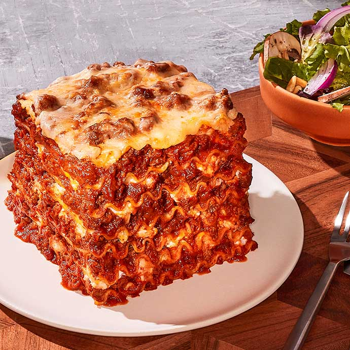

Lasagna Recipe

Description
This easy Lasagna Recipe is meaty, cheesy, and packed with flavor in every bite. Homemade lasagna is better than any restaurant version and it feeds a crowd for way less than going out to eat.
Ingredients
- 1lb Ground Beef
- 1 medium onion
- 2 large garlic cloves, minced
- 1/4 cup dry red wine or beef broth
- 1 Tbsp olive oil
- 24 oz Marinara Sauce
- 1/2 tsp sea salt
- 1/4 tsp black pepper, ground
- 1/4 tsp dried thyme
- 1/2 tsp granulate sugar
- 2 Tbsp parsley, finely chopped
- 9 lasagna noodles, cooked al dente
- Preheat oven to 375˚F. Bring a large pot of water to a boil. Add salt and 9 lasagna noodles. Cook until al dente according to package instructions.
- Spread 1/2 cup meat sauce in the bottom of a deep 9×13 casserole dish. Add 3 noodles, spread on 1/3 of the meat sauce, and sprinkle with 1 cup mozzarella cheese. Spoon on and spread the top with 1/2 of your cheese sauce.
- Repeat until you have 3 layers of noodles:
Add 3 noodles, 1/3 meat sauce, 1 cup mozarella cheese, 1/2 cheese sauce
Add 3 noodles, remaining 1/3 meat sauce, remaining 1 cup mozarella.
- Poke 9-12 toothpicks over the surface of your lasagna (to keep the foil from sticking to the cheese). Cover with foil and bake at 375˚F for 45 minutes.
- Remove foil and broil for 3 to 5 minutes, or until cheese turns golden. Let lasagna rest 30 min before slicing.